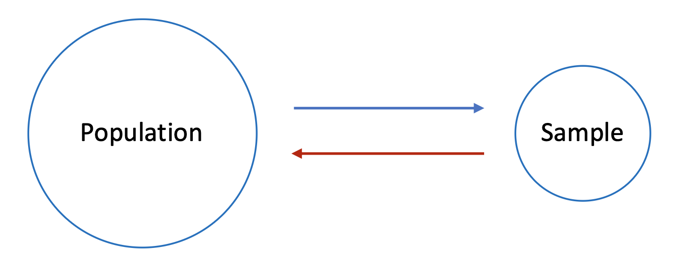
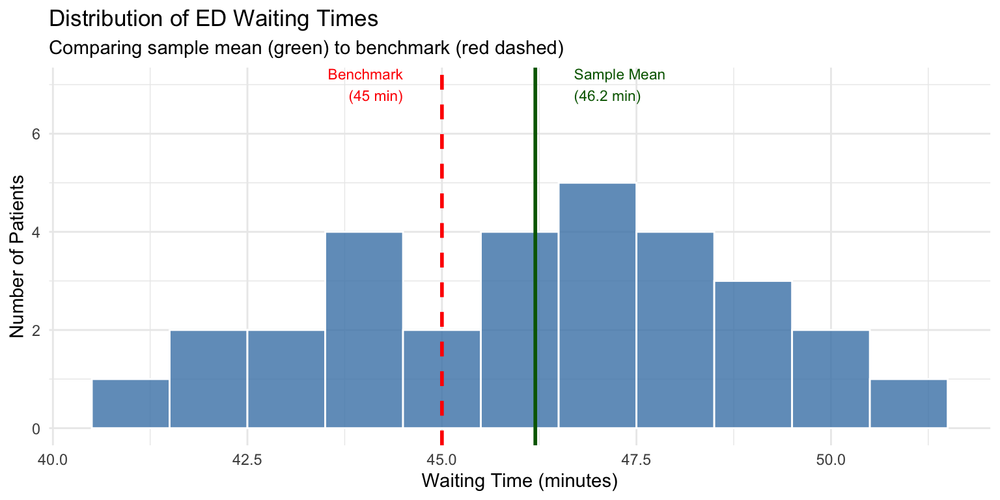
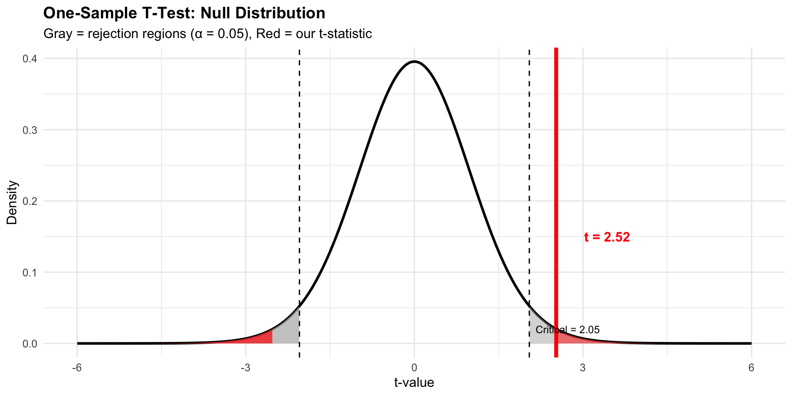
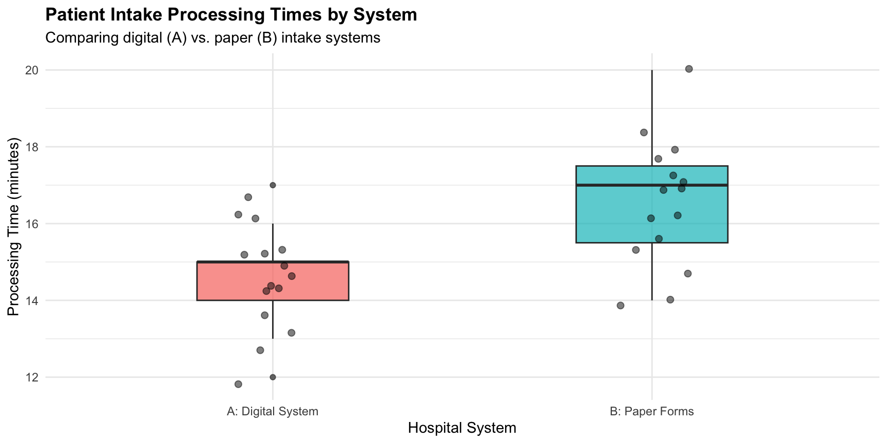
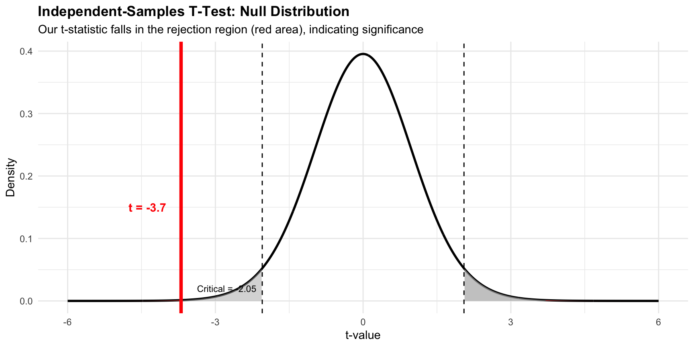
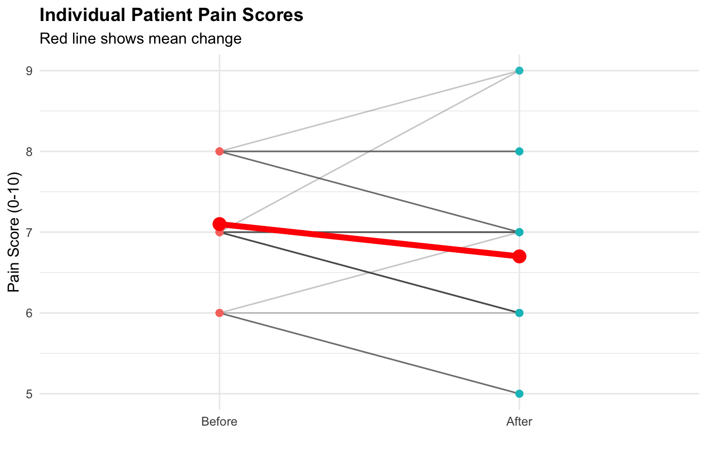
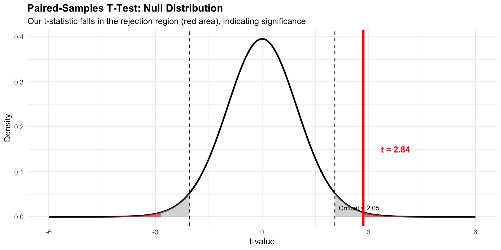

# Load required packages
library(ggplot2)
library(dplyr)
library(parameters)
# Set seed for reproducibility
set.seed(2026)Week 05
2026-02-11
Let’s think about this scenario:
A hospital administrator notices their emergency department’s average waiting time (from randomly selected 30 patients) is 52 minutes, while the regional standard is 45 minutes.
A key question we need to understand is:
This is exactly what t-tests help us answer!
t-tests determine whether observed differences are statistically significant.
This distinction is critical:
By the end of this lecture, you will be able to:
t.test() functionggplot2Real-world applications where t-tests drive decisions:
| Test Type | Purpose | Example |
|---|---|---|
| One-sample | Compare sample mean to a benchmark | ED wait time vs. 45-min standard |
| Independent-samples | Compare means from two separate groups | Digital vs. paper intake systems |
| Paired-samples | Compare two related measurements | Before vs. after an intervention |
First, let’s load the required packages:
We’ll use two datasets throughout this lecture:
# Demonstration dataset
hospital_ops <- read.csv("https://raw.githubusercontent.com/mba642-spring-26/mba642-spring-26.github.io/refs/heads/main/datasets/week05_demo_data.csv")
# Practice dataset
patient_outcomes <- read.csv("https://raw.githubusercontent.com/mba642-spring-26/mba642-spring-26.github.io/refs/heads/main/datasets/week05_practice_data.csv")hospital_ops| Variable | Description |
|---|---|
patient_id |
Unique patient identifier |
ed_wait_time |
ED waiting time (minutes) |
intake_hospital |
Hospital system (A=Digital, B=Paper) |
intake_time |
Patient intake processing time (minutes) |
pain_before, pain_after |
Pain scores (0-10 scale) |
patient_outcomes| Variable | Description |
|---|---|
patient_id |
Unique patient identifier |
satisfaction |
Patient satisfaction (1-10 scale) |
protocol_group |
Clinical protocol (New = Enhanced Recovery, Standard = Standard Care) |
length_of_stay |
Hospital stay (days) |
bp_before, bp_after |
Systolic blood pressure (mmHg) |
A one-sample t-test compares a sample mean to a known or hypothesized population mean or value.
Key Question: Is our sample mean significantly different from a benchmark?
Key Components:
The one-sample t-test is appropriate when comparing against a fixed reference:

Two competing explanations for the difference:
For our ED waiting times scenario:
The t-test will help us decide whether to reject H₀ based on our sample data.
The t-statistic is calculated as:
\[t = \frac{\bar{X} - \mu_0}{s / \sqrt{n}}\]
Where:
Numerator (\(\bar{X} - \mu_0\)):
Denominator (\(s / \sqrt{n}\)):
Interpretation:
# Extract ED waiting times from our dataset
waiting_times <- hospital_ops$ed_wait_time # getting wait time data
mu_0 <- 45 # benchmark (regional average)
n <- length(waiting_times) # sample size
x_bar <- mean(waiting_times) # sample mean
s <- sd(waiting_times) # sample standard deviation
se <- s / sqrt(n) # standard error of the mean
t_stat <- (x_bar - mu_0) / se # t-statisticOur t-statistic (2.52) tells us how many standard errors our sample mean is from the benchmark.
ggplot(hospital_ops, aes(x = ed_wait_time)) +
geom_histogram(binwidth = 1, fill = "steelblue", color = "white", alpha = 0.8) +
geom_vline(xintercept = mu_0, color = "red", linetype = "dashed", linewidth = 1) +
geom_vline(xintercept = x_bar, color = "darkgreen", linewidth = 1) +
annotate("text", x = mu_0 - 0.5, y = 7, label = "Benchmark\n(45 min)",
color = "red", hjust = 1, size = 3) +
annotate("text", x = x_bar + 0.5, y = 7, label = paste0("Sample Mean\n(", round(x_bar, 1), " min)"),
color = "darkgreen", hjust = 0, size = 3) +
labs(title = "Distribution of ED Waiting Times",
subtitle = "Comparing sample mean (green) to benchmark (red dashed)",
x = "Waiting Time (minutes)", y = "Number of Patients") +
theme_minimal()

t.test() function in R.
One Sample t-test
Parameter | Mean | mu | Difference | 95% CI | t(29) | p
-----------------------------------------------------------------------
ed_wait_time | 46.20 | 45 | 1.20 | [45.23, 47.17] | 2.52 | 0.017
Alternative hypothesis: true mean is not equal to 45Key findings:
A clinic wants to test if their average patient satisfaction score differs from the national average of 8.0 (out of 10). Use the patient_outcomes dataset.
Question: Is the average satisfaction significantly different from the target?
An independent-samples t-test compares means from two different, unrelated groups.
Key Question: Are these two group means significantly different from each other?
Key Requirements:
The independent-samples t-test is appropriate when comparing two separate, independent groups:
Situation: Your health system is considering digital intake systems.
Question: Does the digital system result in faster processing times?
You collect processing time data from 15 randomly selected patients at each hospital to determine whether the difference represents a real efficiency gain.
For our intake systems comparison:
The t-test will help us decide whether the observed difference is statistically significant.
\[t = \frac{\bar{X}_1 - \bar{X}_2}{s_p\sqrt{\frac{1}{n_1} + \frac{1}{n_2}}}\]
Pooled standard deviation:
\[s_p = \sqrt{\frac{(n_1-1)s_1^2 + (n_2-1)s_2^2}{n_1 + n_2 - 2}}\]
Numerator (\(\bar{X}_1 - \bar{X}_2\)):
Denominator:
Pooled SD (\(s_p\)):
First, let’s get each hospital’s intake time data.
Let’s check descriptive statistics for each hospital.
# Hospital A: Digital
mean(hospital_A) # average intake time in minutes
sd(hospital_A) # standard deviation of intake time in minutes
length(hospital_A) # number of patients
# Hospital B: Paper
mean(hospital_B) # average intake time in minutes
sd(hospital_B) # standard deviation of intake time in minutes
length(hospital_B) # number of patients# Create grouped data for visualization
intake_viz <- hospital_ops %>%
mutate(hospital_label = ifelse(intake_hospital == "A_Digital",
"A: Digital System", "B: Paper Forms"))
# Box plot with individual points
ggplot(intake_viz, aes(x = hospital_label, y = intake_time, fill = hospital_label)) +
geom_boxplot(alpha = 0.7, width = 0.4) +
geom_jitter(width = 0.1, alpha = 0.5, size = 2) +
labs(title = "Patient Intake Processing Times by System",
subtitle = "Comparing digital (A) vs. paper (B) intake systems",
x = "Hospital System", y = "Processing Time (minutes)") +
theme_minimal() +
theme(legend.position = "none",
plot.title = element_text(face = "bold"))

Same as one-sample t-test, we can use t.test() function in R.
Two Sample t-test
Parameter1 | Parameter2 | Mean_Parameter1 | Mean_Parameter2 | Difference
------------------------------------------------------------------------
hospital_A | hospital_B | 14.53 | 16.53 | -2.00
Parameter1 | 95% CI | t(28) | p
--------------------------------------------
hospital_A | [-3.11, -0.89] | -3.70 | < .001
Alternative hypothesis: true difference in means is not equal to 0Key findings:
A hospital wants to compare the length of stay (in days) between patients receiving a new Enhanced Recovery Protocol (ERP) versus Standard Care. Use the patient_outcomes dataset and test this hypothesis.
# Fill in the blanks
new_protocol <- patient_outcomes$length_of_stay[patient_outcomes$protocol_group == "___"]
standard_care <- patient_outcomes$length_of_stay[patient_outcomes$protocol_group == "___"]
# Perform the t-test
result_los <- t.test(___, ___, var.equal = ___)
# alternatively:result_los <- t.test(___ ~ ___, data = ___, var.equal = ___)
parameters(result_los)
Question: Is the difference in length of stay statistically significant?
A paired-samples t-test compares two related measurements on the same subjects.
Key Question: Is there a significant change within the same individuals?
Key Characteristic:
Key Advantage: Each person serves as their own control!
The paired-samples t-test is appropriate for related measurements:
Situation: A hospital implemented a new non-pharmacological pain management protocol (integrating guided imagery and music therapy).
To evaluate effectiveness, they measure pain scores (0-10 scale) for 30 patients before and after the protocol.
Question: Did the protocol significantly reduce pain?
For our pain management protocol evaluation:
The t-test will help us determine whether the protocol had a significant effect.
The paired t-test analyzes differences between paired observations:
\[t = \frac{\bar{D}}{s_D / \sqrt{n}}\]
Where:
Let’s first get the pain scores from our dataset.
Let’s check descriptive statistics of the pain scores.
pain_data <- data.frame(
patient = rep(1:30, 2),
time = factor(rep(c("Before", "After"), each = 30),
levels = c("Before", "After")),
score = c(before, after)
)
ggplot(pain_data, aes(x = time, y = score, group = patient)) +
geom_line(alpha = 0.3, color = "gray30") +
geom_point(aes(color = time), size = 2, alpha = 0.7) +
stat_summary(aes(group = 1), fun = mean, geom = "line",
linewidth = 2, color = "red") +
stat_summary(aes(group = 1), fun = mean, geom = "point",
size = 4, color = "red") +
labs(title = "Individual Patient Pain Scores",
subtitle = "Red line shows mean change",
x = "", y = "Pain Score (0-10)") +
theme_minimal() +
theme(legend.position = "none",
plot.title = element_text(face = "bold"))

Same as other t-tests, we can use t.test() function with paired = TRUE option.
Paired t-test
Parameter | Group | Difference | t(29) | p | 95% CI
-------------------------------------------------------------
before | after | 0.40 | 2.84 | 0.008 | [0.11, 0.69]
Alternative hypothesis: true mean difference is not equal to 0Key findings:
A health clinic wants to evaluate the effectiveness of a lifestyle intervention program (12-week program with dietary modification and exercise coaching) on reducing blood pressure. Use the patient_outcomes dataset and test the hypothesis that the intervention program reduces blood pressure.
Question: Is the change in blood pressure statistically significant?
Use this guide to select the appropriate t-test:
| Question | If Yes… | R Function |
|---|---|---|
| Comparing to a benchmark? | One-sample | t.test(x, mu = value) |
| Two separate groups? | Independent-samples | t.test(x, y, var.equal = TRUE) |
| Same subjects, twice? | Paired-samples | t.test(x, y, paired = TRUE) |
“Is our average wait time different from the 45-minute standard?” → One-sample
“Do patients at Hospital A have shorter stays than Hospital B?” → Independent-samples
“Did patient satisfaction improve after our intervention?” → Paired-samples
t.test() in R with appropriate argumentsweek05_practice.qmd
Week 5 | Mean Comparison: t-tests